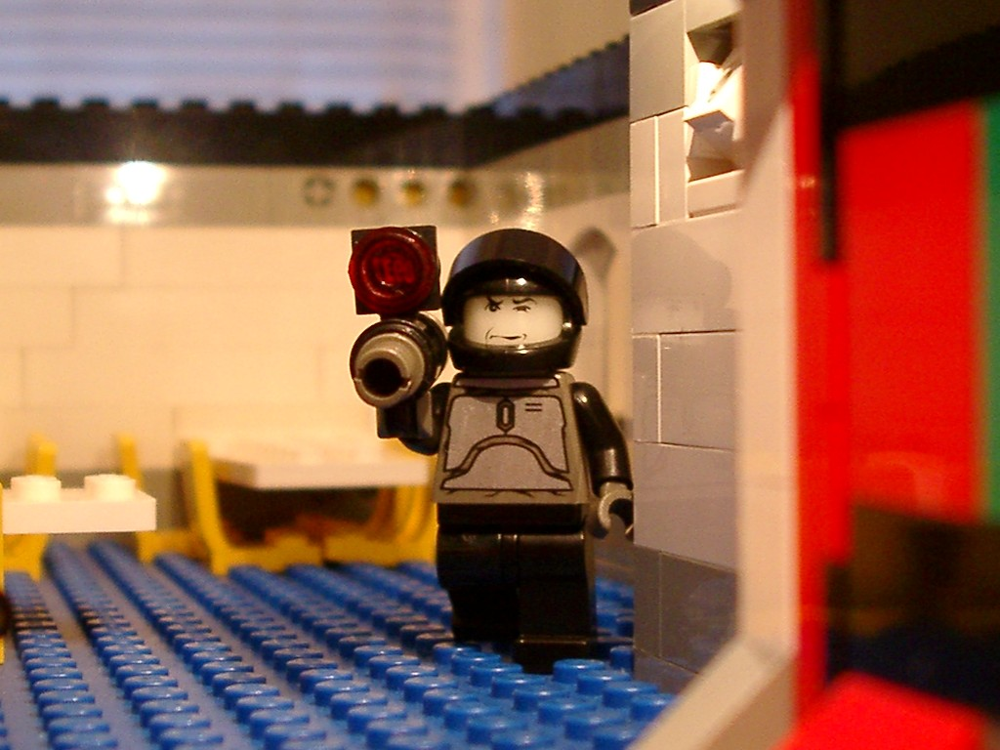
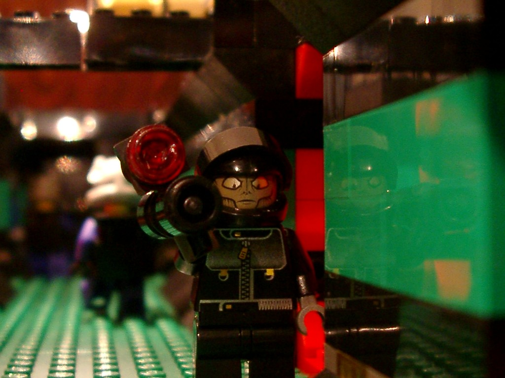
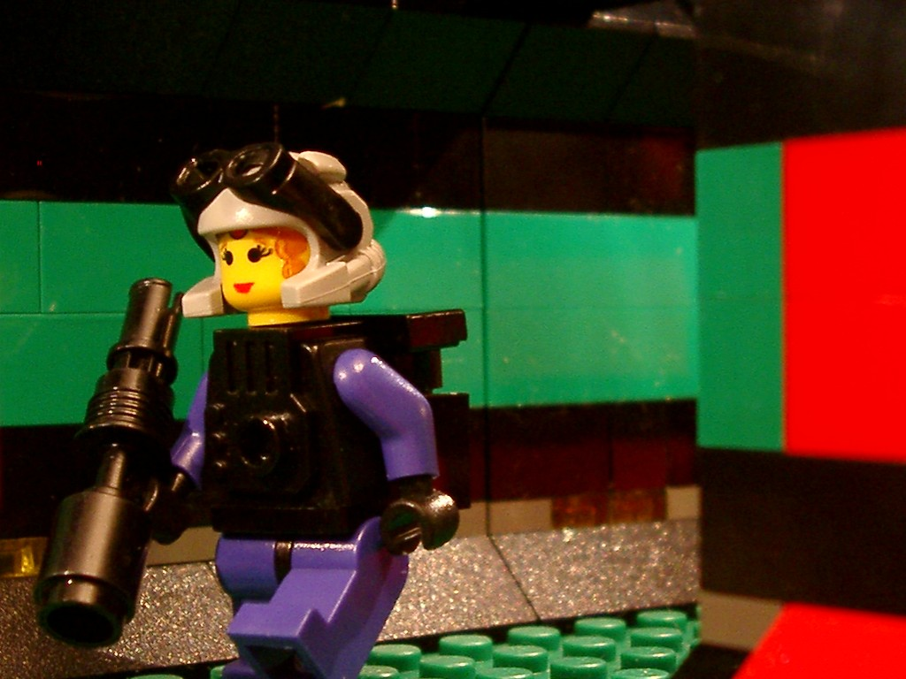
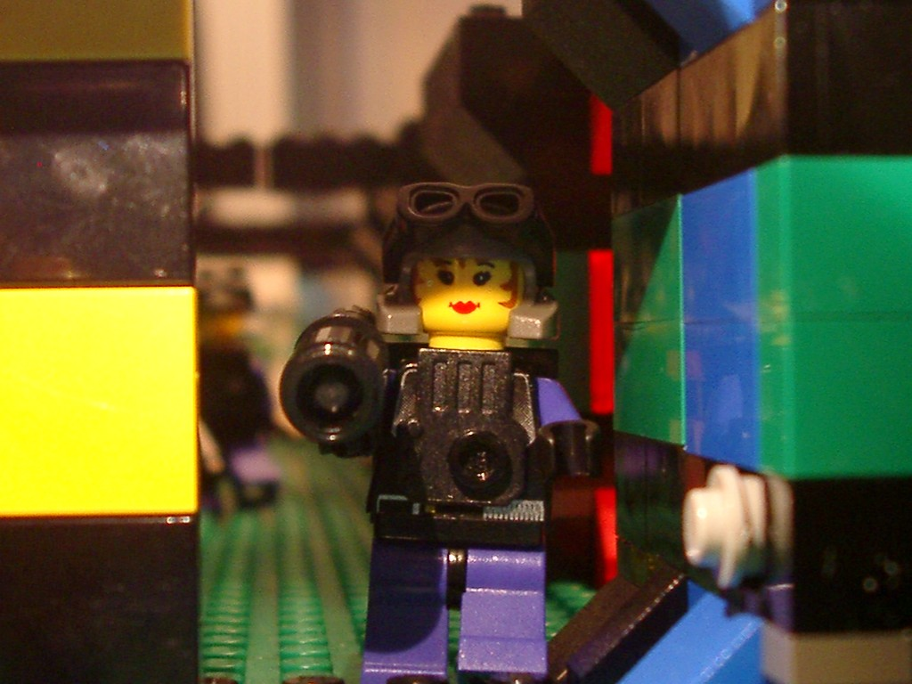
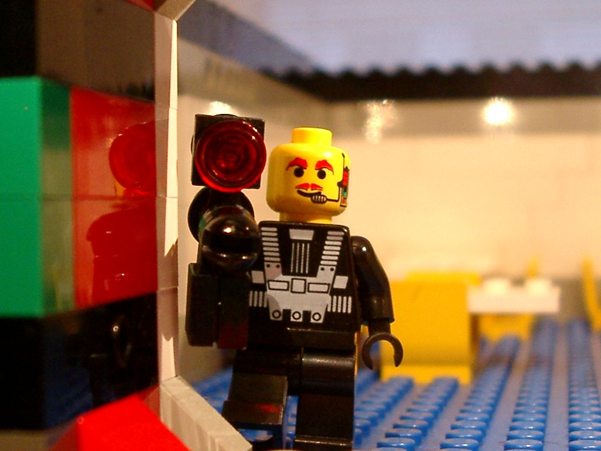
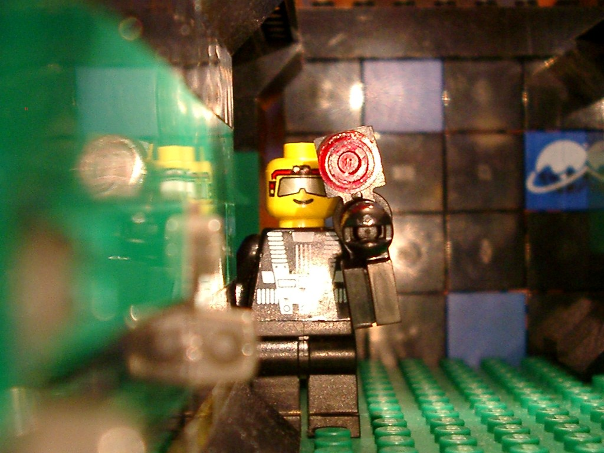
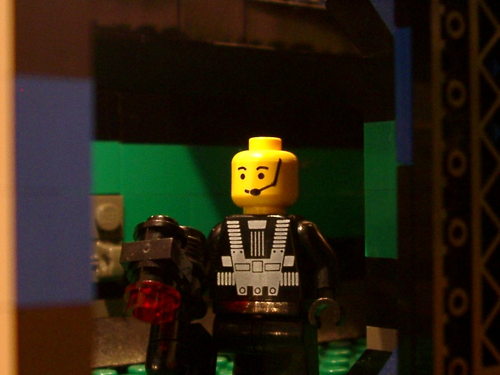
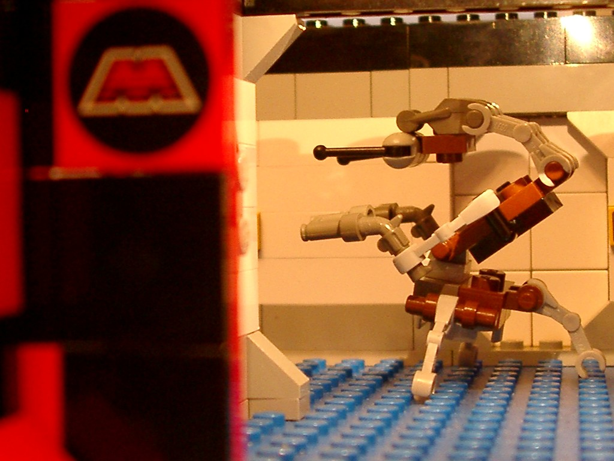

|  |
Lt Conner's weapon of choice is the T78 Impact rifle. He also prefers the light kevlar jacket over the heavier version. You may be wonder how Lt Conner got such a pale complextion. During a scouting mission on planet 3.14, he was exposed to an rare alien spore. Lt Conner experience a major reaction that made his skin glow in the dark. If you don't like pain, don't mention night lights around him. |
|  |
Don't let his looks fool you, he's a lot meaner than that. His weapon of choice is the X39 Siege Rifle. "There's nothing like the smell of burnt flesh", a quote that Dengar likes to tell his troops. We asked Sgt Dengar what he thinks of the body armor. "Armor's for these rookies that don't know how to take a hit". Dengar doesn't use armor. |
|  |
|  | She's a real firecraker. Especially when she's packing high explosives. |
|  |
|  |
|  |
Don't Meet Destroyer Droid 11489
|  | This is Dengars pet Droid. Dengar's improvements, which we use losely, were to modify his personality traits. We found 11489 in the back alley playing with the rats. It wasn't pretty. |
page created by Jonathan Dallas